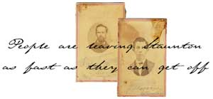

Newspapers
Articles from the Staunton newpapers Spectator and Vindicator during the war
Enter
The Booker Collection
A Waynesboro family's Civil War papers
Enter
The Casper C. Branner Letters
A student of Augusta's Mossy Creek Academy discusses daily life there
and secessionist sentiments at the state and county level
November 30, 1860
February 9, 1861
January 10, 1861
Lizzie to Mary Letter
Discussion of Staunton's evacuation, Gen. Jackson's movements, and other town news
November 18, 1862
George Sommers Letter
Details troop movements, removal of military stores, and war scares in Staunton
April 26 (1862?)
Hotchkiss Family Papers
Correspondence and notes from the family of Jedediah Hotchkiss,
"Mapmaker of the Confederacy" and founder of the Mossy Creek Academy
Enter
Trimble Family Papers
War documents of an Augusta family, mostly concerning Joseph and John D. Trimble
Enter
Rolston Family Letters
Correspondence between an Augusta County family during the war years
Enter
J.B. Christian Ledger
Memorandum of tasks to be done on a farm in 1864
1864
 Return to Main Page
Return to Main Page
 Return to the Valley of the Shadow
Return to the Valley of the Shadow